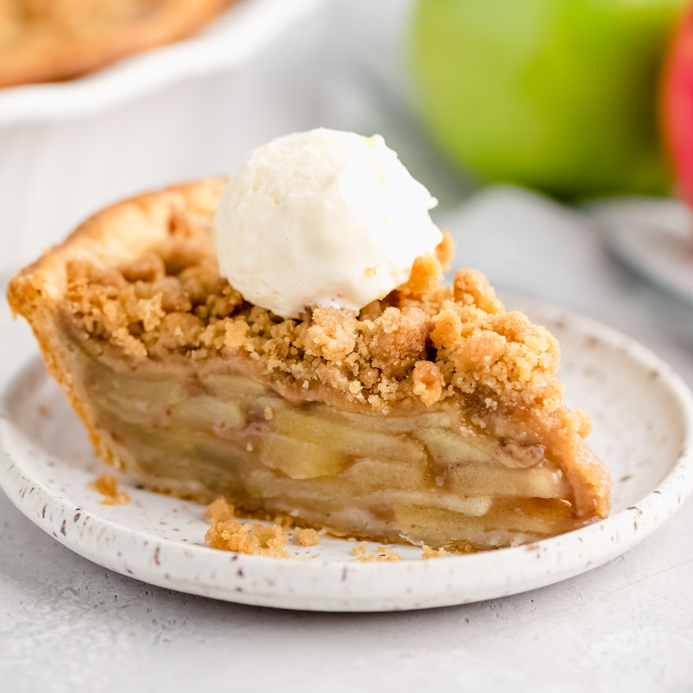

Apple Crumb Pie

Description
This is an apple pie recipe with a crumb topping. It uses Granny Smith apples. They will need to be peeled and thinly sliced. You can also add raisins or walnuts for added flavor and crunch!
Ingredients
Apple Pie:
- 6 cups thinly sliced apples
- 1T lemon juice (optional)
- 3/4 cup white sugar
- 2T all-purpose flour
- 1/2t ground cinnamon
- 1/8t ground nutmeg
- 1/2 cup raisins (optional)
- 1/2 cup chopped walnuts (optional)
- 1 (9 inch) pie shell
Crumb Topping:
- 1/2 cup all-purpose flour
- 1/2 cup packed brown sugar
- 3T butter